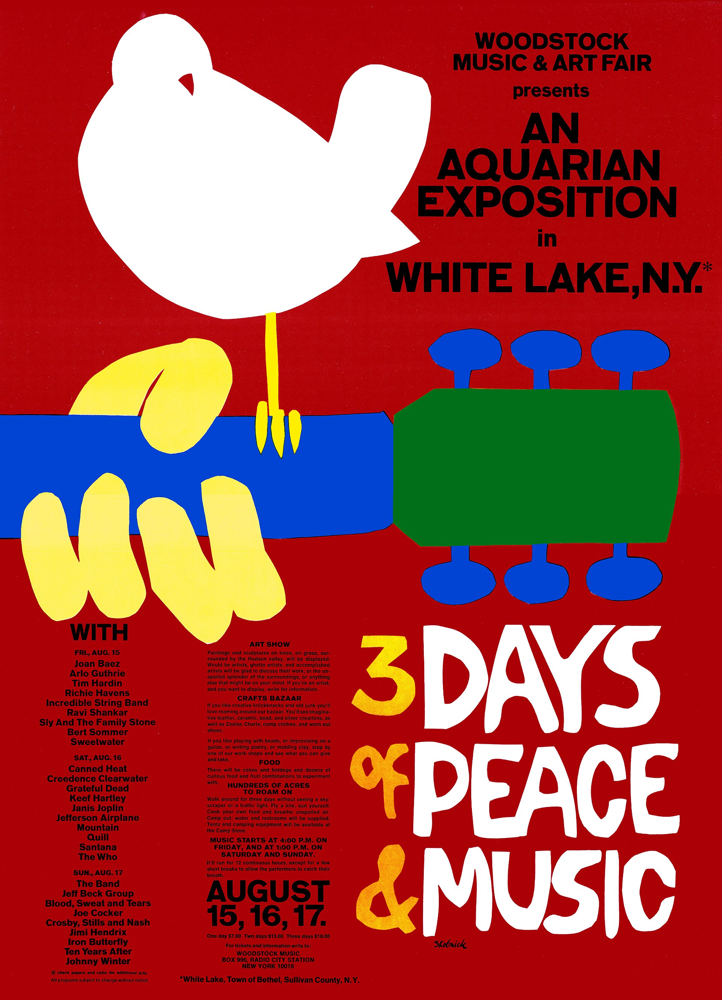
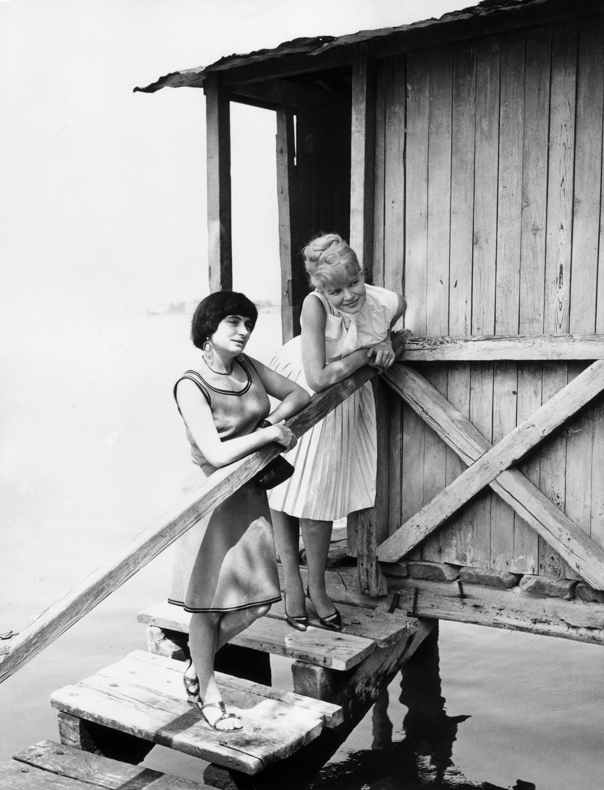

A daily archive · 8:45 Taipei
Capsules
Each day this site publishes one long lesson about a period in history: what happened, who did the work, when it took place, and why it mattered. Huiru Huang writes them for 8:45 in Taipei. A lesson is meant to take a quiet hour. When you finish, look at what else was happening in the same years.
- Monday Feminism
- Tuesday Music
- Wednesday Film
- Thursday Literature
- Friday History
- Saturday Business
- Sunday Psych / soc
All lessons
This week
Lessons dated this Monday through Sunday, Taipei time.
No lessons this week match that search or filter.
Previous lessons
Lessons from earlier weeks. You can still filter them by subject.

The 1911 Revolution: ending the Qing without a finished republic
A New Army mutiny in Wuchang ended the Qing. A bargain with Yuan Shikai named a republic. A constitution that could bind the man with the army did not follow.

Existentialism (c. 1943–1960): literature after the occupation
After high modernism’s broken sentence came war, occupation, and Liberation. In Paris a press word — existentialism — stuck to novels and plays of situation, to Les Temps modernes, and to a public break between Camus and Sartre.

New Hollywood (c. 1967–1980): the studios lose the plot, then bet on directors
Television took the weekly audience, the Production Code lost its force, and the old moguls sold out to conglomerates. American studios then financed younger directors, antiheroes, and profit participants — until Jaws, Star Wars, and Heaven’s Gate taught them a different lesson.

Psychedelia (c. 1965–1969): studios, scenes, and longer songs
After the British Invasion, studios and ballrooms stretched the pop single. San Francisco, London, and a few other cities made longer songs, light shows, and albums you were meant to sit with.

Second Wave (c. 1963–1982): the personal is political
After the vote, public feminism turned to housework, sex, pay, and who counted as a woman. A bestseller, small consciousness-raising groups, new laws, and a 1977 Black feminist statement made those private facts into politics.

The bystander effect: a mechanism, then a newspaper story that was not the night
What diffusion of responsibility claims, then Kitty Genovese, the Times story that launched the teaching example, and the later proof that the story was not what happened on Austin Street.

David and Goliath: how the smaller player wins
Asymmetric competition, judo strategy, disruption, and differentiation — then Honda, Southwest, and Canon as cases, used only for the facts named public sources actually state.

War of Resistance (1937–45): the war that did not wait for 1939
From the clash at the Marco Polo Bridge to the wartime capital in Chongqing, this is a world war looked at from China, not as Asia’s footnote to Europe.

High modernism (c. 1910–30): writers break the ordinary sentence
Woolf, Joyce, and Eliot changed how a novel or a poem could move through time. In the same years, the magazine 新青年 and Lu Xun changed the written language of Chinese literature. They are contemporaneous events, not a required pairing.

French New Wave (c. 1958–64): the camera leaves the studio
Young French critics attacked the polished studio cinema they called the tradition of quality, then made their own films in real streets with lighter cameras. A 1959–62 burst of features, and a magazine that had already trained an audience, gave the press a name: Nouvelle Vague.

British Invasion (c. 1963–67): Britain sells America its own records back
After rationing, British teenagers learned guitar from American R&B and rock and roll 45s. Skiffle, art schools, and pirate radio turned those records into a local scene. In 1964 American radio named the export a “British Invasion.”

First Wave (c. 1848–1920): the fight over whether women counted as political persons
From Seneca Falls to the Nineteenth Amendment, women in the United States and Britain organized for the vote and for legal standing. The movement split over race, tactics, and who was included when organizers said “we.”
There are no older lessons yet. This is the first week on the site.